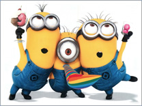

| 黄人介绍 | 人物简介 | 身份揭秘 | 图片欣赏 | 同名电影 | 在线留言 |
|
|||||||
|
|||||||
 |
小黄人是格鲁和老搭档纳瓦利欧博士用变种DNA、脂肪酸和香蕉泥组成的胶囊状生物，身穿蓝色背带装，听命于格鲁和纳瓦利欧，小黄人主要为纳瓦利欧建造工程、充当格鲁的试验品，或者格鲁三个可爱的女儿表演没人看时，数量庞大的小黄人可以充当观众，小黄人爱闹内讧，如果打起架来，轻则十几个对打，重则动辄火箭筒，小黄人的语言通常为中文之外的各种混杂，但小黄人会说中文（参见《神偷奶爸2》），由于自身是香蕉组成，小黄人酷爱香蕉，《神偷奶爸2》中，小黄人被注射PX-41药剂，不仅变得更加无脑，而且刀枪剑戟无法伤它们分毫，最后纳瓦利欧博士将解药配置在超级难吃的果冻内，将数量庞大的小黄人恢复正常。 《卑鄙的我》（国内又译名《神偷奶爸》）于2010年上映，影片中的角色像一个个黄色的小胶囊，受到世界各地影迷的追捧，还被网友戏称为“小黄人”。这些小黄人勤劳勇敢，爱吃香蕉和冰激凌，虽然做事容易分心，仍萌倒一片影迷。2013年7月，电影续集《卑鄙的我2》于美国上映，2014年1月10日于中国上映。 不能不提的是，影片里的小黄人。他们的出现让影片在整个动画情节并没有很出彩的情况下，大大的“火”了，使小黄人拥有了一大批粉丝。这些小黄人拥有自己独特的语言，短胳膊短腿的，走起来也显得特别可爱，他们虽然听令于格鲁，却不是没有思想的机器人。小黄人还有个特点，不管是清洁工、消防员、网球手、警察，只要给他们套上特定衣服，就是扮啥像啥。 “神偷奶爸”系列的成功要归功于小黄人的表现，他们傻里傻气的，说话永远“叽叽喳喳”，很容易满足，还很听主人的话，这对人类来说，根本就是完美的宠物。
|
小黄人网站 |